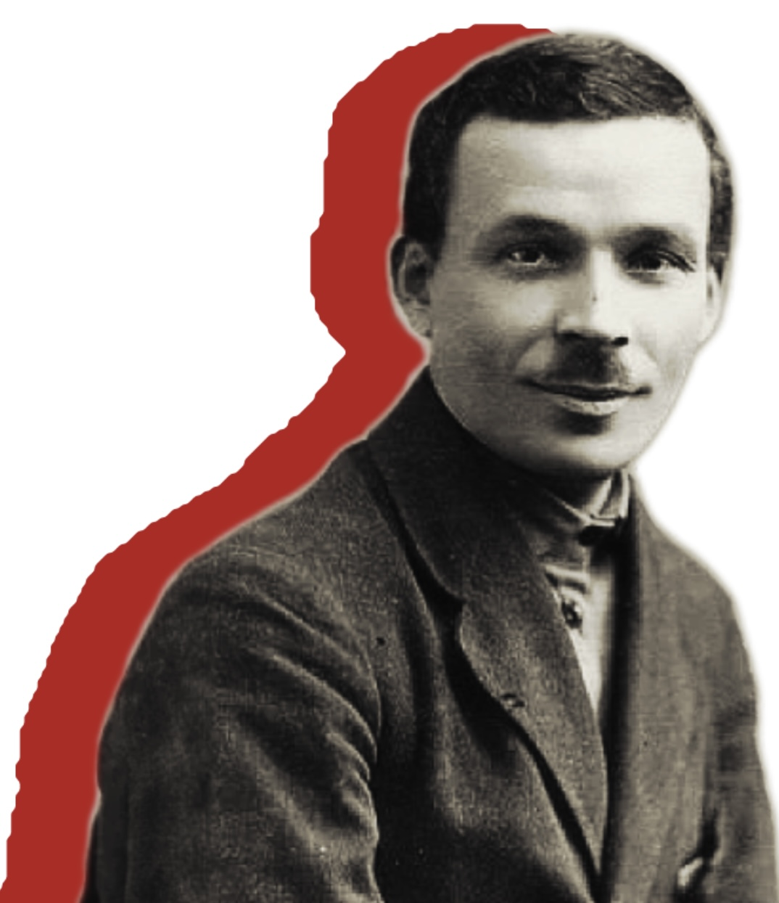
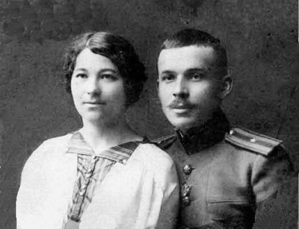
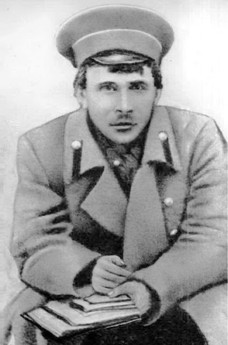

Микола Куліш
1892-1937
«Але я знаю, що того лише ідеї переможуть, хто з ними вийде на ешафот і смерті в вічі скаже»
1892-1937
«Але я знаю, що того лише ідеї переможуть, хто з ними вийде на ешафот і смерті в вічі скаже»
Микола Куліш – це не просто ім'я в історії української літератури, це символ епохи, коли національна свідомість прокидалася, а мистецтво ставало зброєю в боротьбі за самовизначення. Він був драматургом-новатором, чиї п'єси розривали шаблони тогочасного театру, кидали виклик суспільним нормам і ставили гострі питання про ідентичність, політику та людську природу.
Його творчість – це дзеркало складної доби, коли Україна шукала свій шлях у вирі революцій і змін. Куліш не боявся експериментувати з формою, поєднувати трагедію з комедією, сатиру з філософськими роздумами. Його п'єси, такі як «Народний Малахій», «Мина Мазайло» та «Патетична соната», досі залишаються актуальними, бо вони про вічні теми – про пошук себе, про боротьбу з обмеженнями, про абсурдність влади.
Микола Куліш народився 18 грудня 1892 року в селі Чаплинка Дніпровського повіту Таврійської губернії (зараз – Херсонська область) у бідній селянській родині.
Його батько – Гурій Куліш, все життя наймитував. Мати – станова козачка Уляна – неписьменна селянка з Полтавщини, яка вміла майстерно розмальовувати хати й розказувати різні оповідки.
Коли хлопцю виповнилося 13 років, вона передчасно померла і Гурій Куліш одружився вдруге, щоб дати раду трьом дітям і подолати злидні.
Письменник, згадуючи своє дитинство, написав у автобіографії: «Початок мого дитинства – самотність у хаті й схильність до блукання. Базар вабив недогризками, ярмарок – каруселями, церква – процесіями та хоровим співом; весілля – своїми обрядами і музикою; похорони – поминанням й бубликами, та ще й те, що на похоронах мене не били… Всю гіркоту підневільного життя батько Гурій старався заглушити горілкою». З 1901 по 1905 рік Микола навчався у церковно-парафіяльній школі, де проявив непересічні здібності. Його вчитель – Володимир Пилипович Губенко організував збір коштів (близько 100 карбованців) серед Чаплинських інтелігентів для того, щоб Микола міг продовжити освіту в Олешківському міському училищі. Відомо, що мешкав школяр спочатку у хаті приятелів по училищу Антона Алейникова, Михайла Перерви, деякий час довелося жити навіть у богадільні – міському притулку для бідних.
Кілька разів третьокласника Куліша відраховували з училища, як зазначив сам письменник у своїй автобіографії – «за организацию кружков молодежи и непочтение к начальству». Але завдяки своїм здібностям він таки закінчив чотирикласну школу, знайшовши підтримку серед молодих вчителів, які й допомогли йому у 1909 році вступити у п’ятий клас приватної Олешківської чоловічої гімназії. Особливу роль при цьому зіграла Віра Іванівна Панкєєва – дружина відомого місцевого мецената і земського діяча. Вона допомогла здібному хлопцю закінчити училище та й потім всіляко опікувалась розвитком його таланту.
У гімназійні роки майбутній драматург мешкав на квартирі свого товариша по навчанню – Всеволода Невелля, де познайомився зі своєю майбутньою дружиною – Антоніною Невелль, навчився грати на скрипці, мандолині та геліконі, створив сімейний оркестр. «Був він душею і розумом зовсім не подібний до всіх, кого я тоді знала,– згадувала пізніше Антоніна Куліш. «Такий простий, щирий, вибачливий і зрозумілий до всього, що є недосконалого в людині. Саме це полонило моє дівоче серце».
Саме в Олешках у Миколи Куліша почав виявлятися його неабиякий художній і літературний хист. Він став ініціатором і редактором учнівських рукописних журналів: «Наша жизнь», «Колючка», «Стрела», «Веселое язичество», де опублікував і свої сатиричні вірші, фейлетони, епіграми під псевдонімом Гурій Коняга. Тоді ж Микола познайомився і почав товаришувати з І. Шевченком – майбутнім драматургом і прозаїком, відомим в літературі під ім’ям – Івана Дніпровського.
У 1913 році, коли до закінчення гімназії залишалося менше року, її закрили. М. Куліш поїхав на Кавказ, де в той час було легше скласти іспити екстерном. У ті часи юнак мріяв отримати вищу освіту і після гімназії вступити на історико-філологічний факультет Одеського університету. Здавалося, що ця мрія здійсниться, він успішно склав іспити і був зарахований на перший курс обраного вишу. Але почалася Перша світова війна і мобілізований Микола Куліш потрапив у Одеську школу прапорщиків, яку закінчив у 1915 році.
Упродовж 1915–1917 років молодий офіцер перебував на передовій і продовжував писати твори. Дещо з поезій друкували в армійській газеті, а одноактні п’єси розігрували солдати. «Миколу любили в штабі і в полку, – згадувала дружина. – Він писав у польовій газеті такі дотепні вірші на генералів і полковників, що її буквально розхоплювали й у вільні хвилини всі читали й дуже сміялися. Писав він тоді й маленькі одноактові п’єси на «злобу дня», що їх виконували вояки, переодягаючись, коли треба було, у жіночі одяги, пороблені з простирадла...».
У вересні 1916 року Микола Куліш був тяжко поранений і лікувався у Херсонському лазареті. Під час Лютневої революції підтримав її проведення, сподіваючись на побудову нового справедливого суспільства і краще життя народу. Як авторитетного і прогресивного офіцера його було обрано депутатом на військовий з’їзд Західного фронту, що проходив у Луцьку, він займав посаду начальника штабу Першого селянського радянського Дніпровського полку.
Саме в Олешках у Миколи Куліша почав виявлятися його неабиякий художній і літературний хист. Він став ініціатором і редактором учнівських рукописних журналів: «Наша жизнь», «Колючка», «Стрела», «Веселое язичество», де опублікував і свої сатиричні вірші, фейлетони, епіграми під псевдонімом Гурій Коняга. Тоді ж Микола познайомився і почав товаришувати з І. Шевченком – майбутнім драматургом і прозаїком, відомим в літературі під ім’ям – Івана Дніпровського.
У 1913 році, коли до закінчення гімназії залишалося менше року, її закрили. М. Куліш поїхав на Кавказ, де в той час було легше скласти іспити екстерном. У ті часи юнак мріяв отримати вищу освіту і після гімназії вступити на історико-філологічний факультет Одеського університету. Здавалося, що ця мрія здійсниться, він успішно склав іспити і був зарахований на перший курс обраного вишу. Але почалася Перша світова війна і мобілізований Микола Куліш потрапив у Одеську школу прапорщиків, яку закінчив у 1915 році.
Упродовж 1915–1917 років молодий офіцер перебував на передовій і продовжував писати твори. Дещо з поезій друкували в армійській газеті, а одноактні п’єси розігрували солдати. «Миколу любили в штабі і в полку, – згадувала дружина. – Він писав у польовій газеті такі дотепні вірші на генералів і полковників, що її буквально розхоплювали й у вільні хвилини всі читали й дуже сміялися. Писав він тоді й маленькі одноактові п’єси на «злобу дня», що їх виконували вояки, переодягаючись, коли треба було, у жіночі одяги, пороблені з простирадла...».
У вересні 1916 року Микола Куліш був тяжко поранений і лікувався у Херсонському лазареті. Під час Лютневої революції підтримав її проведення, сподіваючись на побудову нового справедливого суспільства і краще життя народу. Як авторитетного і прогресивного офіцера його було обрано депутатом на військовий з’їзд Західного фронту, що проходив у Луцьку, він займав посаду начальника штабу Першого селянського радянського Дніпровського полку.
На початку 1918 року після повернення з фронту додому, Микола Куліш став головою Олешківської ради робітничих і селянських депутатів. Того ж року вступив до Комуністичної партії. У липні 1919 р. у Херсоні сформував Дніпровський селянський полк у складі Червоної Армії, який захищав Херсон і Миколаїв від денікінців. Після встановлення радянської влади в Україні став начальником штабу групи військ Херсонського та Дніпровського повітових військкоматів.
У 1921 році, коли Куліш повернувся до цивільної служби, у нього почався новий період життя. На перше місце вийшла довгоочікувана літературно-художня і освітянська діяльність у Дніпровському повіті. Його дружина, Антоніна Куліш, так писала про його роботу цього періоду: «З новим запалом взявся він до праці: організував школи, відкривав ті, що позакривалися під час війни, організовував дитячі садки, ясла й притулки, на початку 20-х років як освітянський керівник і педагог-практик склав українську абетку (буквар) для шкіл, назвавши її «Первинка»»
У 1922 році Микола Куліш працював інспектором шкіл у губернському відділі народної освіти Одеси. У 1925 році переїхав до Харкова, редагував газету «Червоний шлях», увійшов у літературну організацію «ВАПЛІТЕ», познайомився з такими відомими діячами української літератури, як Микола Хвильовий, Лесь Курбас, Остап Вишня, Володимир Сосюра, Юрій Яновський, Павло Тичина та іншими. У 1926 році його було обрано президентом «ВАПЛІТЕ», а в кінці 1929 р. – членом президії нового літературного об’єднання «Пролітфронт».
З початком 1930-х років у житті Миколи Куліша настали трагічні сторінки життя: більшість його творів, які були популярними, зазнали нищівної політичної та естетичної критики.
Коли 16 червня 1934 року була створена Спілка письменників України, Миколу Куліша не зарахували до складу її членів. 1 вересня 1934 р. письменника оголосили буржуазно-націоналістичним драматургом і виключили з лав комуністичної партії за написання «антипартійних націоналістичних п’єс».
У грудні 1934 р. його заарештували, звинувативши у приналежності до терористичної організації «боротьбистів» і у зв’язках з ОУН, а у березні 1935 р. – засудили до 10 років Соловецьких таборів.
3 листопада 1937 р. за постановою особливої трійки НКВС по Ленінградській області від 9 жовтня 1937 року Микола Куліш Микола Куліш був розстріляний в урочищі Сандармох Медвежогорського району, Карелія, у складі так званого «Соловецького етапу» у кількості 1111 осіб, разом з Валер’яном Підмогильним, Юрієм Мазуренком та Григорієм Епіком. Через багато років, 4 серпня 1956 року – реабілітований за відсутністю складу злочину.